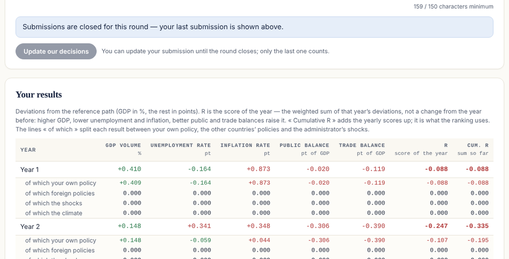
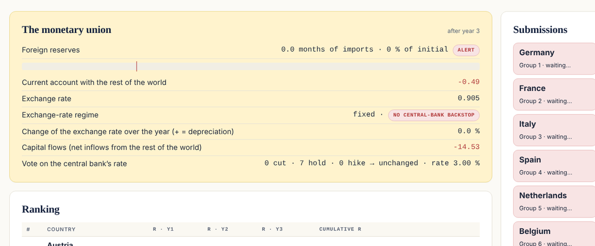
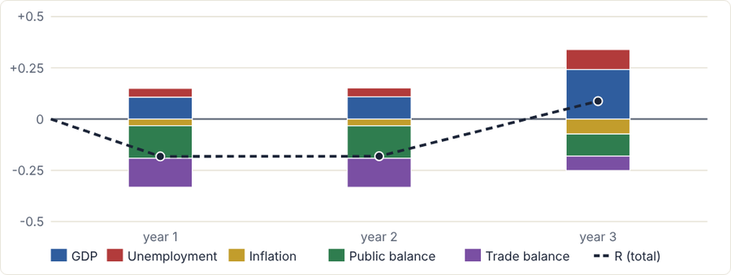
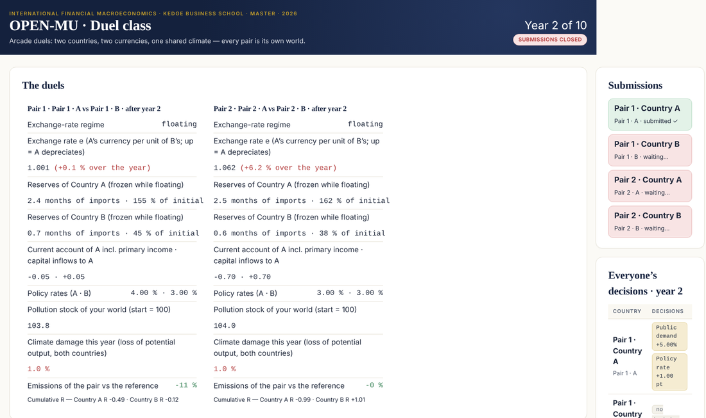

Govern a country in a monetary union, year after year, against the other governments — on a stock-flow consistent model you can read in full. Seven teams, four levers, two votes at the council, and a shared stock of reserves that somebody will empty.
Macroscope is a multiplayer policy game. Each team runs the government of one member of a monetary union: it sets public demand, social benefits, income tax and consumption tax for the year, votes on the common central bank's rate, posts pledges at the council of ministers — and then the model runs. The report comes back with five results (GDP, unemployment, inflation, public balance, trade balance), a score, and a decomposition that says exactly how much of each result came from the team's own policy, from the other governments, and from the administrator's shocks.
Nothing is hidden: the engine is a stock-flow consistent model in the tradition of Godley and Lavoie, every equation is published, and every stock is the sum of its flows. Students can predict before they decide, and check afterwards.

Every team governs the same country for three years, alone, with a strategy written before and an analysis after. Same shock for everyone: the first lesson is about multipliers, leakages and the restoring forces of the model.
One country each, year by year. The administrator announces the shocks of the year in a communiqué, opens a timer, convenes the council. Decisions stay secret while the round is open and are revealed when it closes. The run, the ranking on the board, and on to the next year.
Who drained the common reserves, who kept their pledges, what the crisis vote did. The decomposition and the year-by-year charts turn the argument into evidence.

World demand, the central bank's rate, household confidence, an oil shock, a devaluation; in the richer versions a sudden stop of capital inflows, the exchange-rate regime, the central bank's backstop, a climate disaster — and elections that change what a country's voters want from their government.
Each class picks its version; a class in progress keeps it. Every level contains the previous one.
The engine is called OPEN-MU; its equations, parameters and orders of magnitude are on the model page. Every version is tested for stationarity and for stock-flow consistency on every run.


Three static pages (teams, administrator, board) and a small Google Apps Script backend bound to a Google Sheet. No installation for students: a PIN per team, on a phone or a laptop. The model runs in the administrator's browser.
Questions, a class to set up, or a wish to contribute: leo.malherbe@kedgebs.com.
Godley, W. & Lavoie, M. (2007), Monetary Economics, Palgrave Macmillan — chapter 6 (an open economy with a fixed exchange rate and reserves) for the core, chapter 12 (two countries, capital flows, fixed versus flexible rates) for the capital account. Firms, banks and a horizontalist credit channel added; prices and competitiveness, a climate block and an arcade variant on top.
Dafermos, Y., Nikolaidi, M. & Galanis, G. (2017), "A stock-flow-fund ecological macroeconomic model", Ecological Economics, 131 — the DEFINE model, reduced here to emissions, a stock, a damage function and two levers, on a compressed time scale.
Developed for the Master course International Financial Macroeconomics at KEDGE Business School, 2026, by Léo Malherbe. Open source, on GitHub.